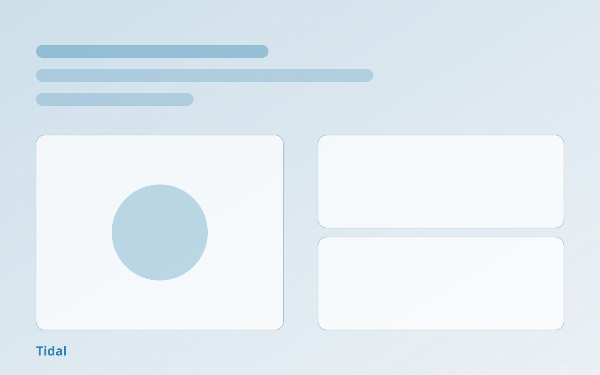

作品輯

Tidal 營運監控台
把三個後台的告警集中成一頁，讓值班人員不必在分頁之間追資訊。
我的角色與貢獻
前端主要開發
我負責資訊架構、即時資料層、告警排序邏輯、鍵盤操作流程
團隊與 1 位後端工程師、1 位營運主管共同定義告警優先級
問題與目標
問題值班人員需要同時開三個後台才能判斷一次異常，平均要 20 分鐘才能確認問題來源。
目標讓最需要處理的告警在首屏就出現，並且不需要滑鼠就能完成處理流程。
成果
-
實測結果
90秒
異常來源確認時間由 20 分鐘縮短至 90 秒內
來源：5 位營運主管的任務計時測試（前後各 3 次）（2026-06）
所有作品
關於我
八年前端經驗，近三年專注在設計系統與無障礙。我偏好把規範變成可執行的檢查—— 對比驗證、資料契約、追溯矩陣，能被機器擋下的就不要靠人記得。